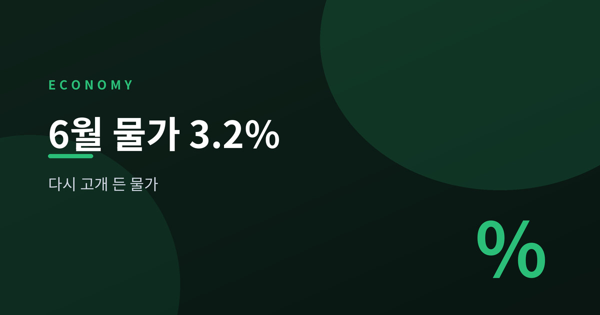
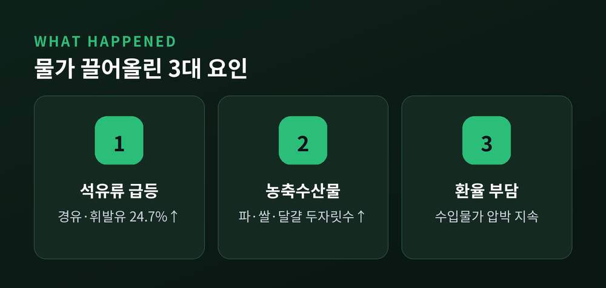
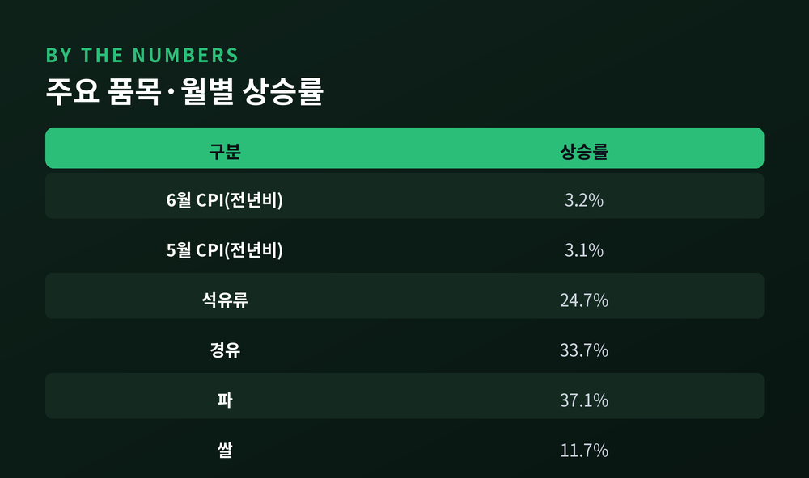
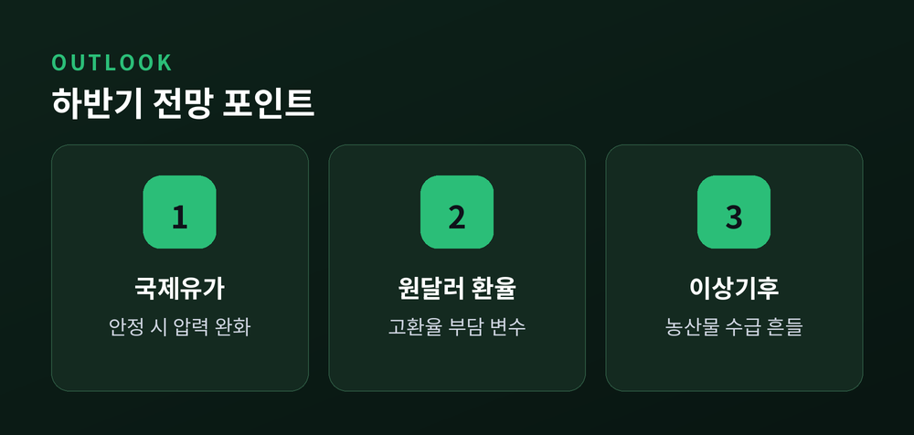

다시 고개 든 물가, 무엇이 끌어올렸나

국가데이터처가 지난 2일 발표한 '2026년 6월 소비자물가동향'에 따르면, 6월 소비자물가지수는 119.99(2020년=100)로 지난해 같은 달보다 3.2% 올랐습니다. 5월 3.1%보다 0.1%포인트 확대된 수치로, 2023년 12월(3.2%) 이후 30개월 만에 가장 높은 상승률입니다. 2개월 연속 3%대 상승세가 이어지고 있습니다.
가장 큰 견인차는 석유류였습니다. 석유류 물가는 전년동월 대비 24.7% 뛰어 2022년 7월 이후 3년 11개월 만에 최대폭으로 올랐습니다. 경유가 33.7%, 휘발유와 등유가 각각 23.1% 상승했는데, 중동 정세 불안으로 국제유가가 오른 여파가 국내로 옮겨온 결과입니다. 석유류 하나만으로 전체 물가상승률을 0.93%포인트 끌어올렸습니다.
농축수산물도 3.2% 올라 물가를 밀어 올렸습니다. 곡물이 8.2%, 축산물이 6.2%, 수산물이 3.7% 상승했고, 농산물은 1.1% 오르며 상승 전환했습니다. 품목별로는 파가 37.1%, 조기 12.0%, 쌀 11.7%, 달걀 10.2%, 국산 쇠고기 7.5%, 돼지고기가 4.5% 뛰었습니다. 반면 양배추(-19.7%), 당근(-13.4%), 배(-11.2%), 마늘·오이(각 -11.0%), 무(-9.0%) 등은 내려가며 품목 간 온도차가 컸습니다.

소비자물가 3%대는 단순한 숫자 이상의 의미를 지닙니다. 우선 가계 실질구매력이 흔들립니다. 임금 상승 속도가 물가를 따라가지 못하면, 같은 돈으로 살 수 있는 것이 줄어듭니다. 특히 파·쌀·달걀처럼 밥상에 자주 오르는 품목의 오름폭이 크다는 점은 체감 물가를 더 무겁게 만드는 요인입니다.
통화정책에도 부담입니다. 한국은행은 이날 물가상황점검회의를 열고 상황을 점검했습니다. 근원물가(농산물·석유류 제외 기준)는 2.4%, OECD 방식(식품·에너지 제외) 기준으로는 2.5% 수준을 나타내며, 물가 상승세가 일부 품목에 국한된 것이 아니라 폭넓게 나타나고 있음을 시사합니다. 물가가 목표 수준을 웃도는 상황이 이어지면, 기준금리 인하 속도 조절론에 힘이 실릴 수 있습니다.
"국제유가 하락과 정부 물가안정 대책 등의 영향으로 7월 소비자물가 상승률은 6월보다 다소 낮아질 것으로 예상됩니다." — 한국은행 (물가상황점검회의)

한국은행은 국제유가 하락과 정부의 물가안정 대책 등을 근거로 7월 물가상승률이 6월보다는 다소 낮아질 것으로 내다봤습니다. 다만 "당분간 고물가 흐름이 이어질 수 있다"는 신중한 언급도 함께 나왔습니다.
하반기 물가 흐름을 좌우할 변수는 크게 세 가지로 꼽힙니다. 첫째는 국제유가와 중동 정세로, 진정 국면이 이어지면 석유류발 물가 압력이 완화될 여지가 있습니다. 둘째는 원/달러 환율입니다. 환율이 높은 수준을 유지하면 수입 물가 부담이 쉽게 꺾이지 않을 수 있습니다. 셋째는 이상기후에 따른 농산물 수급입니다. 폭염이나 집중호우 등 기상 변수가 채소·과일 가격의 변동성을 키울 수 있습니다.
물가 상승률이 목표치를 웃도는 상황이 이어질지, 예상대로 상반기 정점을 찍고 완만히 낮아질지는 좀 더 지켜봐야 합니다. 다음 달 발표되는 7월 물가지표가 하반기 흐름을 가늠할 중요한 분기점이 될 전망입니다.
### 6월 소비자물가 주요 지표
| 구분 | 수치 |
|---|---|
| 6월 소비자물가 상승률(전년동월대비) | 3.2% |
| 5월 소비자물가 상승률 | 3.1% |
| 전월대비 상승률 | 0.1% |
| 석유류 상승률 | 24.7% |
| 경유 / 휘발유·등유 | 33.7% / 23.1% |
| 농축수산물 상승률 | 3.2% |
| 근원물가(농산물·석유류 제외) | 2.4% |

이 글은 정보 제공을 목적으로 하며 투자 권유가 아닙니다.